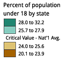

1. Sequential schemes are suited to ordered data that progress from low to high. Lightness steps dominate the look of these schemes, with light colors for low data values to dark colors for high data values.

1. Sequential schemes are suited to ordered data that progress from low to high. Lightness steps dominate the look of these schemes, with light colors for low data values to dark colors for high data values.
2. Diverging schemes put equal emphasis on mid-range critical values and extremes at both ends of the data range. The critical class or break in the middle of the legend is emphasized with light colors and low and high extremes are emphasized with dark colors that have contrasting hues.
Diverging schemes are most effective when the class break in the middle of the sequence, or the lightest middle color, is meaningfully related to the mapped data. Use the break or class emphasized by a hue and lightness change to represent a critical value in the data such as the mean, median, or zero. Colors increase in darkness to represent differences in both directions from this meaningful mid-range value in the data.
NOTE: Although we have designed the diverging schemes to be symmetrical, you may need to customize schemes by moving the critical break/class closer to one end of the sequence to suit your map data. For example, a map of population change might have two classes of population loss and five classes of growth, requiring a scheme with only two colors on one side of a zero-change break and five on the other. Choose a scheme with ten-colors and omit three colors from the loss side of the scheme.
3. Qualitative schemes do not imply magnitude differences between legend classes, and hues are used to create the primary visual differences between classes. Qualitative schemes are best suited to representing nominal or categorical data.
Most of the qualitative schemes rely on differences in hue with only subtle lightness differences between colors. You may pick a subset of colors from a legend with more classes if you are not pleased with the subsets. For example, you could pick four colors from a seven-color legend. Two exceptions to the use of consistent lightness:
Paired Scheme: This scheme presents a series of lightness pairs for each hue (e.g. light green and dark green). Use this when you have categories that should be visually related, though they are not explicitly ordered. For example, 'forest' and 'woodland' would be suitably represented with dark and light green.

Accent Scheme: Use to accent small areas or important classes with colors that are more saturated/darker/lighter than others in the scheme - found at the bottom of the 'Accents' legends. Beware of emphasizing unimportant classes when you use qualitative schemes.